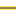

<!doctype html>
<html lang="en">
    <head>
        <meta charset="utf-8">
        <meta http-equiv="X-UA-Compatible" content="IE=edge">
        <meta name="viewport" content="initial-scale=1,user-scalable=no,maximum-scale=1,width=device-width">
        <meta name="mobile-web-app-capable" content="yes">
        <meta name="apple-mobile-web-app-capable" content="yes">
        <link rel="stylesheet" href="css/leaflet.css">
        <link rel="stylesheet" href="css/qgis2web.css"><link rel="stylesheet" href="css/fontawesome-all.min.css">
        <link rel="stylesheet" href="css/leaflet-search.css">
        <style>
        html, body, #map {
            width: 100%;
            height: 100%;
            padding: 0;
            margin: 0;
        }
        </style>
        <title></title>
    </head>
    <body>
        <div id="map">
        </div>
        <script src="js/qgis2web_expressions.js"></script>
        <script src="js/leaflet.js"></script>
        <script src="js/multi-style-layer.js"></script>
        <script src="js/leaflet.rotatedMarker.js"></script>
        <script src="js/leaflet.pattern.js"></script>
        <script src="js/leaflet-hash.js"></script>
        <script src="js/Autolinker.min.js"></script>
        <script src="js/rbush.min.js"></script>
        <script src="js/labelgun.min.js"></script>
        <script src="js/labels.js"></script>
        <script src="js/leaflet-search.js"></script>
        <script src="data/Indeksketahananpangan_IKP_2.js"></script>
        <script src="data/BatasAdministrasi_LineKec_3.js"></script>
        <script>
        var map = L.map('map', {
            zoomControl:true, maxZoom:28, minZoom:1
        }).fitBounds([[-7.991620813583736,109.80973691015208],[-7.636110367850038,110.44347292211216]]);
        var hash = new L.Hash(map);
        map.attributionControl.setPrefix('<a href="https://github.com/tomchadwin/qgis2web" target="_blank">qgis2web</a> &middot; <a href="https://leafletjs.com" title="A JS library for interactive maps">Leaflet</a> &middot; <a href="https://qgis.org">QGIS</a>');
        var autolinker = new Autolinker({truncate: {length: 30, location: 'smart'}});
        var bounds_group = new L.featureGroup([]);
        function setBounds() {
        }
        map.createPane('pane_GoogleSatellite_0');
        map.getPane('pane_GoogleSatellite_0').style.zIndex = 400;
        var layer_GoogleSatellite_0 = L.tileLayer('https://mt0.google.com/vt/lyrs=s&x={x}&y={y}&z={z}', {
            pane: 'pane_GoogleSatellite_0',
            opacity: 1.0,
            attribution: '',
            minZoom: 1,
            maxZoom: 28,
            minNativeZoom: 0,
            maxNativeZoom: 18
        });
        layer_GoogleSatellite_0;
        map.addLayer(layer_GoogleSatellite_0);
        map.createPane('pane_CutoffPointIndeksKetahananPangan_1');
        map.getPane('pane_CutoffPointIndeksKetahananPangan_1').style.zIndex = 401;
        var img_CutoffPointIndeksKetahananPangan_1 = 'data/CutoffPointIndeksKetahananPangan_1.png';
        var img_bounds_CutoffPointIndeksKetahananPangan_1 = [[-7.9831562794510385,110.00270919900555],[-7.644574901923515,110.25050063275643]];
        var layer_CutoffPointIndeksKetahananPangan_1 = new L.imageOverlay(img_CutoffPointIndeksKetahananPangan_1,
                                              img_bounds_CutoffPointIndeksKetahananPangan_1,
                                              {pane: 'pane_CutoffPointIndeksKetahananPangan_1'});
        bounds_group.addLayer(layer_CutoffPointIndeksKetahananPangan_1);
        map.addLayer(layer_CutoffPointIndeksKetahananPangan_1);
        function pop_Indeksketahananpangan_IKP_2(feature, layer) {
            var popupContent = '<table>\
                    <tr>\
                        <th scope="row">WADMKC</th>\
                        <td>' + (feature.properties['WADMKC'] !== null ? autolinker.link(feature.properties['WADMKC'].toLocaleString()) : '') + '</td>\
                    </tr>\
                    <tr>\
                        <th scope="row">WADMKK</th>\
                        <td>' + (feature.properties['WADMKK'] !== null ? autolinker.link(feature.properties['WADMKK'].toLocaleString()) : '') + '</td>\
                    </tr>\
                    <tr>\
                        <th scope="row">WADMPR</th>\
                        <td>' + (feature.properties['WADMPR'] !== null ? autolinker.link(feature.properties['WADMPR'].toLocaleString()) : '') + '</td>\
                    </tr>\
                    <tr>\
                        <th scope="row">SHAPE_Leng</th>\
                        <td>' + (feature.properties['SHAPE_Leng'] !== null ? autolinker.link(feature.properties['SHAPE_Leng'].toLocaleString()) : '') + '</td>\
                    </tr>\
                    <tr>\
                        <th scope="row">SHAPE_Area</th>\
                        <td>' + (feature.properties['SHAPE_Area'] !== null ? autolinker.link(feature.properties['SHAPE_Area'].toLocaleString()) : '') + '</td>\
                    </tr>\
                    <tr>\
                        <th scope="row">IKP1_Rasio</th>\
                        <td>' + (feature.properties['IKP1_Rasio'] !== null ? autolinker.link(feature.properties['IKP1_Rasio'].toLocaleString()) : '') + '</td>\
                    </tr>\
                    <tr>\
                        <th scope="row">2_Estimasi</th>\
                        <td>' + (feature.properties['2_Estimasi'] !== null ? autolinker.link(feature.properties['2_Estimasi'].toLocaleString()) : '') + '</td>\
                    </tr>\
                    <tr>\
                        <th scope="row">3_Proxy Pe</th>\
                        <td>' + (feature.properties['3_Proxy Pe'] !== null ? autolinker.link(feature.properties['3_Proxy Pe'].toLocaleString()) : '') + '</td>\
                    </tr>\
                    <tr>\
                        <th scope="row">4_Persenta</th>\
                        <td>' + (feature.properties['4_Persenta'] !== null ? autolinker.link(feature.properties['4_Persenta'].toLocaleString()) : '') + '</td>\
                    </tr>\
                    <tr>\
                        <th scope="row">5_Estimasi</th>\
                        <td>' + (feature.properties['5_Estimasi'] !== null ? autolinker.link(feature.properties['5_Estimasi'].toLocaleString()) : '') + '</td>\
                    </tr>\
                    <tr>\
                        <th scope="row">6_Presenta</th>\
                        <td>' + (feature.properties['6_Presenta'] !== null ? autolinker.link(feature.properties['6_Presenta'].toLocaleString()) : '') + '</td>\
                    </tr>\
                    <tr>\
                        <th scope="row">9_Presenta</th>\
                        <td>' + (feature.properties['9_Presenta'] !== null ? autolinker.link(feature.properties['9_Presenta'].toLocaleString()) : '') + '</td>\
                    </tr>\
                    <tr>\
                        <th scope="row">8_Presenta</th>\
                        <td>' + (feature.properties['8_Presenta'] !== null ? autolinker.link(feature.properties['8_Presenta'].toLocaleString()) : '') + '</td>\
                    </tr>\
                    <tr>\
                        <th scope="row">7_Rasio Pe</th>\
                        <td>' + (feature.properties['7_Rasio Pe'] !== null ? autolinker.link(feature.properties['7_Rasio Pe'].toLocaleString()) : '') + '</td>\
                    </tr>\
                </table>';
            layer.bindPopup(popupContent, {maxHeight: 400});
        }

        function style_Indeksketahananpangan_IKP_2_0() {
            return {
                pane: 'pane_Indeksketahananpangan_IKP_2',
                opacity: 1,
                color: 'rgba(35,35,35,0.11764705882352941)',
                dashArray: '',
                lineCap: 'butt',
                lineJoin: 'miter',
                weight: 1.0, 
                fill: true,
                fillOpacity: 1,
                fillColor: 'rgba(196,60,57,0.0)',
                interactive: true,
            }
        }
        map.createPane('pane_Indeksketahananpangan_IKP_2');
        map.getPane('pane_Indeksketahananpangan_IKP_2').style.zIndex = 402;
        map.getPane('pane_Indeksketahananpangan_IKP_2').style['mix-blend-mode'] = 'normal';
        var layer_Indeksketahananpangan_IKP_2 = new L.geoJson(json_Indeksketahananpangan_IKP_2, {
            attribution: '',
            interactive: true,
            dataVar: 'json_Indeksketahananpangan_IKP_2',
            layerName: 'layer_Indeksketahananpangan_IKP_2',
            pane: 'pane_Indeksketahananpangan_IKP_2',
            onEachFeature: pop_Indeksketahananpangan_IKP_2,
            style: style_Indeksketahananpangan_IKP_2_0,
        });
        bounds_group.addLayer(layer_Indeksketahananpangan_IKP_2);
        map.addLayer(layer_Indeksketahananpangan_IKP_2);
        function pop_BatasAdministrasi_LineKec_3(feature, layer) {
            var popupContent = '<table>\
                    <tr>\
                        <td colspan="2">' + (feature.properties['KDPPUM'] !== null ? autolinker.link(feature.properties['KDPPUM'].toLocaleString()) : '') + '</td>\
                    </tr>\
                    <tr>\
                        <td colspan="2">' + (feature.properties['NAMOBJ'] !== null ? autolinker.link(feature.properties['NAMOBJ'].toLocaleString()) : '') + '</td>\
                    </tr>\
                    <tr>\
                        <td colspan="2">' + (feature.properties['REMARK'] !== null ? autolinker.link(feature.properties['REMARK'].toLocaleString()) : '') + '</td>\
                    </tr>\
                    <tr>\
                        <td colspan="2">' + (feature.properties['KDPBPS'] !== null ? autolinker.link(feature.properties['KDPBPS'].toLocaleString()) : '') + '</td>\
                    </tr>\
                    <tr>\
                        <td colspan="2">' + (feature.properties['FCODE'] !== null ? autolinker.link(feature.properties['FCODE'].toLocaleString()) : '') + '</td>\
                    </tr>\
                    <tr>\
                        <td colspan="2">' + (feature.properties['LUASWH'] !== null ? autolinker.link(feature.properties['LUASWH'].toLocaleString()) : '') + '</td>\
                    </tr>\
                    <tr>\
                        <td colspan="2">' + (feature.properties['UUPP'] !== null ? autolinker.link(feature.properties['UUPP'].toLocaleString()) : '') + '</td>\
                    </tr>\
                    <tr>\
                        <td colspan="2">' + (feature.properties['SRS_ID'] !== null ? autolinker.link(feature.properties['SRS_ID'].toLocaleString()) : '') + '</td>\
                    </tr>\
                    <tr>\
                        <td colspan="2">' + (feature.properties['LCODE'] !== null ? autolinker.link(feature.properties['LCODE'].toLocaleString()) : '') + '</td>\
                    </tr>\
                    <tr>\
                        <td colspan="2">' + (feature.properties['METADATA'] !== null ? autolinker.link(feature.properties['METADATA'].toLocaleString()) : '') + '</td>\
                    </tr>\
                    <tr>\
                        <td colspan="2">' + (feature.properties['KDEBPS'] !== null ? autolinker.link(feature.properties['KDEBPS'].toLocaleString()) : '') + '</td>\
                    </tr>\
                    <tr>\
                        <td colspan="2">' + (feature.properties['KDEPUM'] !== null ? autolinker.link(feature.properties['KDEPUM'].toLocaleString()) : '') + '</td>\
                    </tr>\
                    <tr>\
                        <td colspan="2">' + (feature.properties['KDCBPS'] !== null ? autolinker.link(feature.properties['KDCBPS'].toLocaleString()) : '') + '</td>\
                    </tr>\
                    <tr>\
                        <td colspan="2">' + (feature.properties['KDCPUM'] !== null ? autolinker.link(feature.properties['KDCPUM'].toLocaleString()) : '') + '</td>\
                    </tr>\
                    <tr>\
                        <td colspan="2">' + (feature.properties['KDBBPS'] !== null ? autolinker.link(feature.properties['KDBBPS'].toLocaleString()) : '') + '</td>\
                    </tr>\
                    <tr>\
                        <td colspan="2">' + (feature.properties['KDBPUM'] !== null ? autolinker.link(feature.properties['KDBPUM'].toLocaleString()) : '') + '</td>\
                    </tr>\
                    <tr>\
                        <td colspan="2">' + (feature.properties['WADMKD'] !== null ? autolinker.link(feature.properties['WADMKD'].toLocaleString()) : '') + '</td>\
                    </tr>\
                    <tr>\
                        <td colspan="2">' + (feature.properties['WIADKD'] !== null ? autolinker.link(feature.properties['WIADKD'].toLocaleString()) : '') + '</td>\
                    </tr>\
                    <tr>\
                        <td colspan="2">' + (feature.properties['WADMKC'] !== null ? autolinker.link(feature.properties['WADMKC'].toLocaleString()) : '') + '</td>\
                    </tr>\
                    <tr>\
                        <td colspan="2">' + (feature.properties['WIADKC'] !== null ? autolinker.link(feature.properties['WIADKC'].toLocaleString()) : '') + '</td>\
                    </tr>\
                    <tr>\
                        <td colspan="2">' + (feature.properties['WADMKK'] !== null ? autolinker.link(feature.properties['WADMKK'].toLocaleString()) : '') + '</td>\
                    </tr>\
                    <tr>\
                        <td colspan="2">' + (feature.properties['WIADKK'] !== null ? autolinker.link(feature.properties['WIADKK'].toLocaleString()) : '') + '</td>\
                    </tr>\
                    <tr>\
                        <td colspan="2">' + (feature.properties['WADMPR'] !== null ? autolinker.link(feature.properties['WADMPR'].toLocaleString()) : '') + '</td>\
                    </tr>\
                    <tr>\
                        <td colspan="2">' + (feature.properties['WIADPR'] !== null ? autolinker.link(feature.properties['WIADPR'].toLocaleString()) : '') + '</td>\
                    </tr>\
                    <tr>\
                        <td colspan="2">' + (feature.properties['TIPADM'] !== null ? autolinker.link(feature.properties['TIPADM'].toLocaleString()) : '') + '</td>\
                    </tr>\
                    <tr>\
                        <td colspan="2">' + (feature.properties['SHAPE_Leng'] !== null ? autolinker.link(feature.properties['SHAPE_Leng'].toLocaleString()) : '') + '</td>\
                    </tr>\
                    <tr>\
                        <td colspan="2">' + (feature.properties['SHAPE_Area'] !== null ? autolinker.link(feature.properties['SHAPE_Area'].toLocaleString()) : '') + '</td>\
                    </tr>\
                    <tr>\
                        <td colspan="2">' + (feature.properties['layer'] !== null ? autolinker.link(feature.properties['layer'].toLocaleString()) : '') + '</td>\
                    </tr>\
                    <tr>\
                        <td colspan="2">' + (feature.properties['path'] !== null ? autolinker.link(feature.properties['path'].toLocaleString()) : '') + '</td>\
                    </tr>\
                    <tr>\
                        <td colspan="2">' + (feature.properties['4_Total Ru'] !== null ? autolinker.link(feature.properties['4_Total Ru'].toLocaleString()) : '') + '</td>\
                    </tr>\
                    <tr>\
                        <td colspan="2">' + (feature.properties['4_Rumah Ta'] !== null ? autolinker.link(feature.properties['4_Rumah Ta'].toLocaleString()) : '') + '</td>\
                    </tr>\
                    <tr>\
                        <td colspan="2">' + (feature.properties['4_Rumah _1'] !== null ? autolinker.link(feature.properties['4_Rumah _1'].toLocaleString()) : '') + '</td>\
                    </tr>\
                    <tr>\
                        <td colspan="2">' + (feature.properties['4_Total _1'] !== null ? autolinker.link(feature.properties['4_Total _1'].toLocaleString()) : '') + '</td>\
                    </tr>\
                    <tr>\
                        <td colspan="2">' + (feature.properties['4_Persenta'] !== null ? autolinker.link(feature.properties['4_Persenta'].toLocaleString()) : '') + '</td>\
                    </tr>\
                </table>';
            layer.bindPopup(popupContent, {maxHeight: 400});
        }

        function style_BatasAdministrasi_LineKec_3_0() {
            return {
                pane: 'pane_BatasAdministrasi_LineKec_3',
                opacity: 1,
                color: 'rgba(252,233,89,1.0)',
                dashArray: '',
                lineCap: 'square',
                lineJoin: 'bevel',
                weight: 4.0,
                fillOpacity: 0,
                interactive: true,
            }
        }
        function style_BatasAdministrasi_LineKec_3_1() {
            return {
                pane: 'pane_BatasAdministrasi_LineKec_3',
                opacity: 1,
                color: 'rgba(35,35,35,1.0)',
                dashArray: '',
                lineCap: 'square',
                lineJoin: 'bevel',
                weight: 1.0,
                fillOpacity: 0,
                interactive: true,
            }
        }
        map.createPane('pane_BatasAdministrasi_LineKec_3');
        map.getPane('pane_BatasAdministrasi_LineKec_3').style.zIndex = 403;
        map.getPane('pane_BatasAdministrasi_LineKec_3').style['mix-blend-mode'] = 'normal';
        var layer_BatasAdministrasi_LineKec_3 = new L.geoJson.multiStyle(json_BatasAdministrasi_LineKec_3, {
            attribution: '',
            interactive: true,
            dataVar: 'json_BatasAdministrasi_LineKec_3',
            layerName: 'layer_BatasAdministrasi_LineKec_3',
            pane: 'pane_BatasAdministrasi_LineKec_3',
            onEachFeature: pop_BatasAdministrasi_LineKec_3,
            styles: [style_BatasAdministrasi_LineKec_3_0,style_BatasAdministrasi_LineKec_3_1,]
        });
        bounds_group.addLayer(layer_BatasAdministrasi_LineKec_3);
        map.addLayer(layer_BatasAdministrasi_LineKec_3);
        var baseMaps = {};
        L.control.layers(baseMaps,{' Batas Administrasi_LineKec': layer_BatasAdministrasi_LineKec_3,' Indeks ketahanan pangan_IKP': layer_Indeksketahananpangan_IKP_2,"Cut off Point Indeks Ketahanan Pangan": layer_CutoffPointIndeksKetahananPangan_1,"Google Satellite": layer_GoogleSatellite_0,}).addTo(map);
        setBounds();
        map.addControl(new L.Control.Search({
            layer: layer_BatasAdministrasi_LineKec_3,
            initial: false,
            hideMarkerOnCollapse: true,
            propertyName: 'WADMKC'}));
        document.getElementsByClassName('search-button')[0].className +=
         ' fa fa-binoculars';
        L.ImageOverlay.include({
            getBounds: function () {
                return this._bounds;
            }
        });
        </script>
    </body>
</html>
